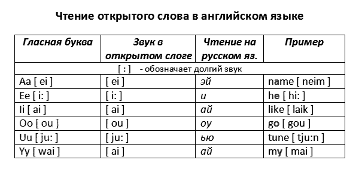
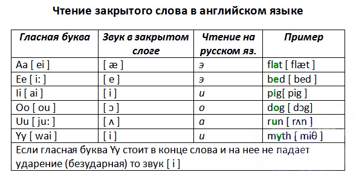

Перед тем как мы начнем разбираться что такое открытый и закрытый слог, хотелось бы сразу предупредить — в английском языке правила чтения имеют столько исключений, что лучше просто запомнить чтение как можно большего количества слов, а остальные читать по аналогии. Но в школе учат правила и ставят оценки…
Чтобы правильно применять правила, для начала разберемся со слогами.
В английском языке, так же как и в русском, слова делятся на слоги. Очень часто для того чтобы правильно прочитать гласную букву в слоге, необходимо определить тип слога — открытый или закрытый слог.
Возьмем обычное русское слово «книга» поделим его на слоги: КНИ-ГА. Оба слога оканчиваются на гласный звук, значит, оба слога ОТКРЫТЫЕ.
Возьмем слово «капкан», поделим на слоги: КАП-КАН. В данном примере оба слога заканчиваются на согласный звук, значит, оба ЗАКРЫТЫЕ.
Но определить слог английского слога не так просто как в русском. Типичное английское слово содержит 2, максимум 3 слога, так что слог найти не сложно.
Если взять слово name, то можно подумать, что в нем 2 слога, но все мы знаем, что читается это [neim], то есть слог один. Разберемся подробнее почему все именно так.
Открытый слог
1. Если в слоге после гласной нет согласной.
Например: go, no, ago, my, hi, be, me.
2. Если после гласной буквы сразу же стоит «е» на конце слова
Например: pie, lie, toe, blue, bye, dye.
3. Если согласная буква есть, но после нее сразу же следует «немая» гласная буква «е», которая не читается.
Например: name, blade, take, these, mine, time, music, pupil, type.
4. После ударной гласной — согласная+le
Например: table, noble.
Запомните правило: В открытом слоге гласные буквы читаются так же, как они называются в алфавите.
Пара примеров:

Reading open syllable in English / Чтение открытого слога в английском языке
Закрытый слог
Если в слоге после гласной стоит одна или несколько согласных букв (кроме буквы r).
Например: bad, cat, vet, strip, stop, camp, battle, end, center, pink.

Reading closed syllable in English / Чтение закрытого слога в английском языке
Но в английском языке «хитрые» гласные и согласные буквы. Они могут читаться по-разному в зависимости от того как они расположены в слове. Поэтому, помимо открытого и закрытого слога нужно знать и другие правила чтения: